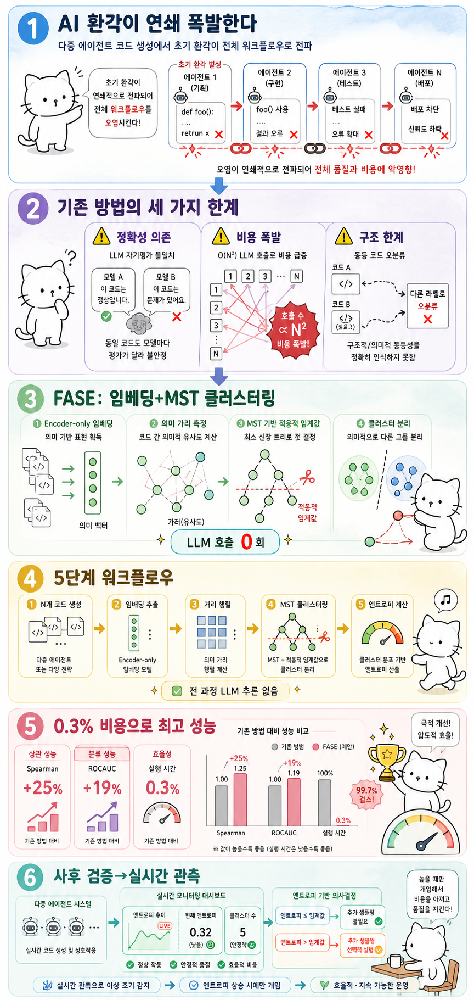

Myno의 블로그
Myno의 블로그 미노
미노
"AI가 AI를 검사하게 하면 문제가 생긴다"
요즘 AI가 코드를 짜는 건 흔한 일이에요. 게다가 여러 AI 에이전트가 역할을 나눠서 협업하면 — 기획자, 코더, 테스터 — 더 복잡한 프로그램도 만들어내죠. MetaGPT, CodeCoR 같은 프레임워크가 이미 등장했어요. 근데 치명적인 문제가 있어요. AI가 환각(Hallucination)을 일으키면 그 오류가 연쇄적으로 전파된다는 거예요. 초기 단계에서 한 번 틀리면, 그 잘못된 결과를 다음 에이전트가 받아서 또 틀리고 — 끝없이 이어져요.
"기존 검사 방법이 너무 비싸고 부정확하다"
"그럼 AI 코드가 맞는지 검사하면 되지 않나?"라고 생각할 수 있죠. 근데 기존 방법들이 세 가지나 문제가 있어요.
첫째, 정확성 의존. LLM 기반 검사는 모델 스스로 "이 코드가 맞다/틀리다"고 판단하는 건데, 모델마다 판단이 달라요. 자기가 쓴 코드를 자기가 검사하라는 거나 마찬가지죠.
둘째, 비용 폭발. N개의 코드를 검사하려면 N²번 LLM을 호출해야 해요. 20개 코드를 비교하면 400번이나 AI를 호출해야 하죠. 돈도 시간도 감당 안 돼요.
셋째, 구조적 한계. 코드의 텍스트나 구조만 비교하면, 결과는 같은데 구조만 다른 코드를 다른 것으로 오분류해요. 마치 "1+2=3"과 "2+1=3"을 다른 답이라고 하는 것과 같죠.
"FASE: AI를 다시 안 부르고 검사하기"
워털루 대학의 연구팀이 제안한 FASE(Fast Adaptive Semantic Entropy)는 아예 다른 접근이에요. 핵심 아이디어는 간단해요: "AI에게 물어보지 말고, 코드를 숫자로 바꿔서 비교하자."
구체적으로 이렇게 해요:
- LLM이 같은 문제에 대해 N개의 코드를 여러 번 생성합니다.
- 각 코드를 임베딩 모델(Qwen3-Embedding)로 숫자 벡터로 변환합니다.
- 벡터들 사이의 코사인 거리 행렬을 계산합니다.
- 최소 신장 트리(MST)를 만들고, 가장 긴 연결선을 끊어서 자연스러운 그룹(클러스터)으로 나눕니다.
- 그룹의 분포로 의미 엔트로피를 계산합니다.
포인트는 전 과정에서 LLM 추론 호출이 0회라는 거예요. LLM 대신 가벼운 임베딩 모델만 쓰니까 비용이 기존 방법의 0.3%밖에 안 들어요.
"적응적 임계값이 핵심"
FASE의 진짜 독창성은 적응적 클러스터링에 있어요. 기존 방법은 "거리가 0.5 이상이면 다른 그룹"처럼 임계값을 고정해놓아요. 그러면 간단한 문제에서는 과분류되고, 복잡한 문제에서는 과소분류되죠.
FASE는 MST의 연결선 길이 분포에서 자동으로 임계값을 계산합니다. 문제가 단순하면 엔트로피가 낮아지고(해답이 하나로 모임), 복잡하면 높아지는 거예요. 각 문제의 난이도에 맞춰 자동 조절되는 거죠. 이게 "Adaptive"의 의미예요.
"0.3% 비용으로 25% 더 정확하게"
결과가 어마어마해요:
- Spearman 상관계수 25% 향상 — 엔트로피와 실제 정답률 사이의 상관관계가 훨씬 높아졌어요.
- ROCAUC 19% 향상 — 정답/오답 분류 성능도 크게 개선.
- 실행 시간 0.3% — 기존 LLM 기반 방법 대비 300배 빠르고 저렴.
특히 다중 에이전트 환경에서 실시간 모니터링이 가능해졌다는 게 큰 의미예요. 에이전트가 코드를 생성하는 즉시 "이건 믿을 만해/아냐"를 판단할 수 있으니까요. 사후 검증에서 실시간 관측으로 전환된 거죠.
"한계는 있지만 방향은 확실하다"
물론 한계도 있어요. 아직 파이썬 중심으로만 검증됐고, 아주 긴 코드에서는 임베딩 품질이 떨어질 수 있어요. 임베딩 모델 자체의 성능에도 의존하죠. 하지만 핵심 방향은 명확해요. LLM을 다시 부르지 않고, 임베딩+그래프 알고리즘으로 코드 품질을 평가하는 거예요. 비용이 300배 적으면서 성능은 오히려 더 좋으니까, 앞으로 다양한 프레임워크에 통합될 가능성이 높아 보입니다.
"코드 말고도 쓸 수 있을까?"
FASE의 핵심 아이디어는 사실 코드에만 국한되지 않아요. 밑바탕에 깔린 전제는 이거예요: "AI가 확신하면 여러 번 답해도 비슷한 답이 나오고, 불확실하면 답이 흩어진다." 답이 잔뜩 흩어진 건 엔트로피가 높으니 의심해야 하고, 모여있는 건 낮으니 믿어도 된다는 논리죠.
이걸 코드 외 영역에 적용해보면:
| 영역 | 적용 가능? | 이유 |
|---|---|---|
| 번역 | ✅ 잘 됨 | "Hello" → "안녕", "하이", "여보세요" — 의미 클러스터가 잘 형성됨 |
| 요약 | ⚠️ 주의 | Mode Collapse 위험 — 틀린 요약도 비슷하게 만들면 낮은 엔트로피인데 틀린 경우 발생 |
| 사실형 QA | ⚠️ 주의 | 체계적 편향 — 20번 다 같은 틀린 답을 하면 엔트로피 낮아서 "맞다"고 착각 |
| 수학/추론 | ⚠️ 제한적 | "1/3" vs "0.333" vs "삼분의 일"을 임베딩이 같다고 보는지 불확실 |
| 창작 글쓰기 | ❌ 어려움 | 다양성 자체가 목적이라 높은 엔트로피가 "나쁘다"를 의미하지 않음 |
| JSON/SQL | ⚠️ 제한적 | 구조적 동등성을 임베딩이 잡는지 도메인 의존적 |
결론적으로 FASE가 잘 작동하려면 두 가지 조건이 필요해요:
- "정답이 여러 형태로 존재하지만 의미는 하나"인 태스크 — 코드, 번역이 여기에 해당
- 임베딩 모델이 그 도메인의 의미적 동등성을 잘 잡아내는 경우
가장 큰 함정은 "다 같이 틀리면 엔트로피가 낮아서 맞다고 착각"하는 거예요. 코드에서는 틀린 코드들이 서로 다양하게 틀리기 때문에 이 함정을 잘 피하지만, 텍스트에서는 모델의 편향이 강하면 다 같은 오답에 수렴해요. 코드→번역→요약→QA 순으로 유용성이 감소하고, 창작이나 개방형 생성에는 적합하지 않습니다.
대상 논문: FASE: Fast Adaptive Semantic Entropy for Code Quality
저자: Shizhe Lin, Ladan Tahvildari · University of Waterloo
arXiv: 2606.09800v1 · ACM Transactions on Software Engineering and Methodology, 2026
원문 슬라이드: galaxy_tab Slides